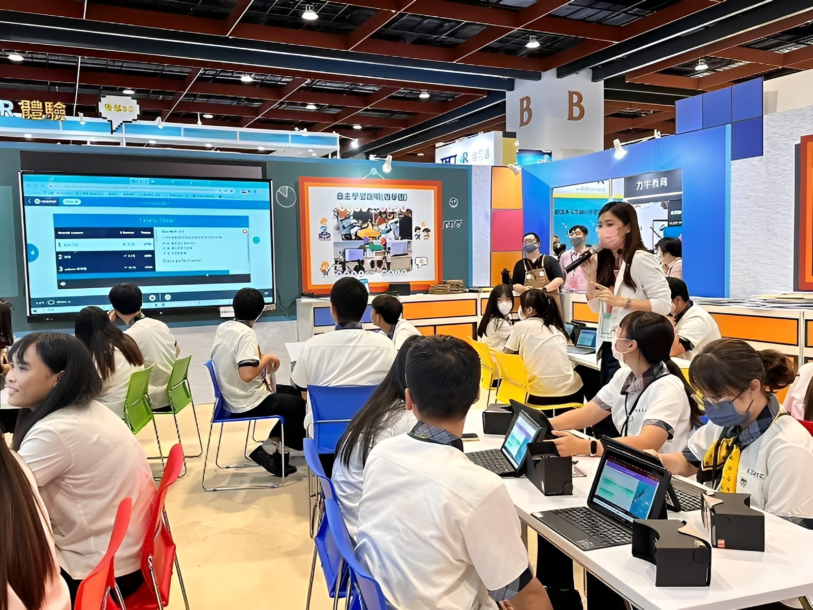
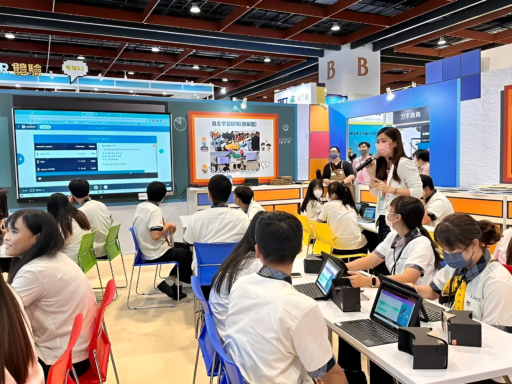

16歲 ~ 18歲
如果是高職生，這時候已經面臨第一次選擇；普通高中生則是在高醫結束後面臨選類組
19歲 ~ 22歲
大一：學習共同通識課程
大二：漸漸縮小興趣範圍
大三：餐與實習課程
大四：準備畢業，參加企業博覽會
大二：漸漸縮小興趣範圍
大三：餐與實習課程
大四：準備畢業，參加企業博覽會
23歲 ~ 30歲
學習專業技能：專注於提升本職學能，積極參與公司內訓、外部課程，甚至考取相關證照，讓自己成為這個領域的專業人才。
累積人脈：參加產業活動、認識同領域的夥伴，建立初期的人際網絡。這些人脈在未來都可能成為你職涯發展的重要助力。
累積人脈：參加產業活動、認識同領域的夥伴，建立初期的人際網絡。這些人脈在未來都可能成為你職涯發展的重要助力。
31歲 ~ 40歲
思考管理職或專業職：開始思考自己的職涯走向，是朝向管理階層發展（帶人），還是成為更深度的專業職（例如資深工程師、顧問等）。
財務規劃：除了薪資成長，也要開始重視個人財務規劃，例如投資理財、儲蓄買房等，讓生活與職涯發展同步前進。
財務規劃：除了薪資成長，也要開始重視個人財務規劃，例如投資理財、儲蓄買房等，讓生活與職涯發展同步前進。
41歲 ~50歲
領導與決策：如果選擇管理職，這個階段可能會擔任部門主管，需要負責團隊的發展、策略規劃與重大決策。
50歲 ~ 60歲
維持穩定：許多人會選擇維持現狀，將重心放在維持工作的穩定性，並更專注於生活與家庭。
轉型為顧問或自由工作者：憑藉著數十年累積的經驗，可以考慮轉為顧問、講師或自由工作者，以更彈性的方式持續發揮價值。
轉型為顧問或自由工作者：憑藉著數十年累積的經驗，可以考慮轉為顧問、講師或自由工作者，以更彈性的方式持續發揮價值。